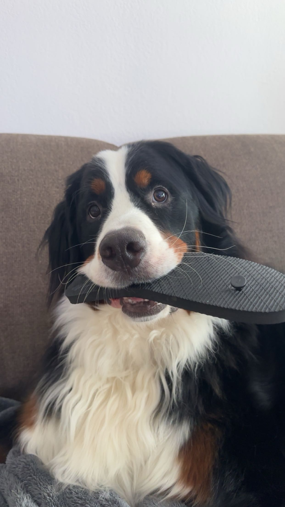

My Best Friend
About five ago, my best friend Dakota moved to Maine. When she lived in our hometown in Ohio, we did everything together. We went out to get ice cream, rode around town on our bikes, and had many sleep overs. She's what I consider my 'ride or die' friend. This past summer I was lucky enough to be able to ride with Dakota and her parents to Maine for two weeks. Those two weeks were the best time of my life. Kota and I meet all the way back in fourth grade. I don't really remember how we met but I remember spending the night at her house for the first time. Thats when I first met her brother and her parents
Kota has two of the cutest dogs in the world. Mavrick is long haired German Sherperad. He's got the cutest eyes and stubby pointy ears every! Her other dog is a Poodle named Cooper! He was this werid thing where he'll walk up to you and give you the cutest baby puppy eyes I have ever seen, and he'll just sit there and whine until you've pet home enough of his liking.
My Pets
I've always wanted a Bernese Mountain Dog . I think they're the biggest, goofiest dog breeds in the world. To my excitment my dad had gotten me when a few months after my childhood dog died. Dolly had ment the world to me. I've had her since I was five years old. Sadly, in 2022 we had to put her down. I was so heart broken at the loss. She was my everything and now, she was gone. It was painful not having a dog in the house. Without Dolly barking at random stuff it got to be really quit. My dad and I both miss having a dog in the house. After we let ourselves heal from the loss we started looking for dogs. It took us a week but than I found the dog I knew I needed.
The puppy I found was named Scott. He was only three hours away from my house. I loved him and couldn't wait to pick him up. Sadly, my dad didn't put a deposite on him so someone had already got him. I was heartbroken. After that happened, my dad told me to look and that he would put a deposite on them. A few hours later I found Scotts brother, Malcolm. Right when I saw him I knew this was him, this is the one. I sent it to my dad and he put in a deposite for him. A few days later, we picked him up. Malcolm was the cutest puppy I have ever seen. He had these big doe baby eyes that melted my heart. He also has a swift kiss which is somewhat rare on a Berner. He's the goofiest dog I've ever met. He always trys to make you laugh. For example, Malcolm will go into the garge and will 99% of the time will grab my shoes and run inside the house, with my shoe in his mouth, and will run around while someone tries to take the shoe back. I love Malcolm to the moon and back, he's my pride and joy and because he is my dog, when I move out he's coming with me.
Here are some things I like to do with Malcolm:
- Going on long walks
- Playing "fetch" outside
- Play "Give me the shoes" game
- Brushing him even though he hate it
We also have two other dogs which are Marketta's dogs. Their names are Bambi and Bunni. They're both mutts so I don't know what they truly are but Bambi seems like she's a terrier type mix and Bunni is apperently a mini domberman mixed with Chihuahua.
My Family
My household contains my father (Brian), me, my dads girlfriend and her daughter as well as three dogs. My dad works at Haas Door as well as Marketta, his girlfriend. Keke, Marketta's daughter, just got done with collage so she is still living at my house. When Marketta and Keke moved in they brought along their two small dogs named Bambi and Bunni, they're both mutts.
School
The school in my home town is very small compared to Four County. So far my my here has been a lot of fun. The days seem to go by faster than what they did in my home town. I really enjoy the program I picked, which is Computer Programming. My teacher,Mr. Geiger, has taught me a lot in the first week of being at Four County. I really like this program and hope to persue in this type of work.